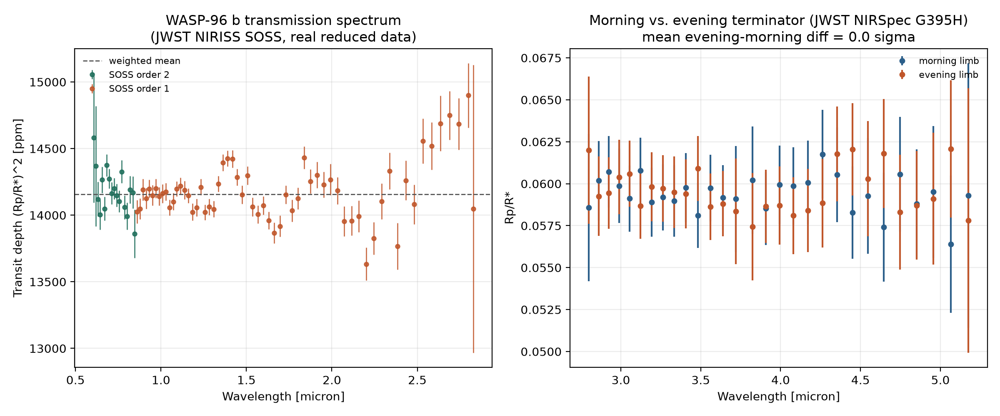

Exoplanet Atmosphere Report · JWST NIRISS SOSS + NIRSpec G395H
The planet whose transmission spectrum NASA unveiled on 12 July 2022 as JWST's first exoplanet result — an unambiguous water-vapor detection that became one of the most recognized plots in the mission's history. This report re-derives that result from the real reduced data, plus a second, later analysis of its morning and evening terminators.
Queried live from the NASA Exoplanet Archive TAP service (pscomppars).
| Radius | 13.45 Earth radii (~1.20 Jupiter radii) |
|---|---|
| Mass | 152.6 Earth masses (~0.48 Jupiter masses) |
| Orbital period | 3.43 days |
| Semi-major axis | 0.045 AU |
| Equilibrium temperature | 1285 K |
| Host star | WASP-96, G-type dwarf, Teff = 5540 K, 1.05 Rsun, 1.06 Msun |
| Distance | 352.5 parsecs (~1150 light-years) |
| Discovery | 2014, transit photometry (WASP survey) |
WASP-96 b is a "textbook" hot Saturn: hot enough for a clear, largely cloud-free atmosphere, orbiting a bright, quiet host star, with a large predicted atmospheric signal. Those three properties made it the ideal target to demonstrate JWST's transmission-spectroscopy capability to the public, and its NIRISS SOSS spectrum — showing an unmistakable water absorption feature near 1.4 microns — was the first exoplanet result released from the telescope.
A later, more detailed study (the source of the data on this page) combined that JWST spectrum with ground-based VLT observations and reported a super-solar atmospheric metallicity and tentative evidence for photochemistry, plus a search for asymmetry between the planet's morning and evening terminators using JWST NIRSpec G395H — a test for real atmospheric circulation patterns, not just bulk composition.
The figure below reproduces both results directly from the bundled real data files — nothing here is illustrative.

scripts/analyze_spectrum.py.The morning/evening asymmetry in this real dataset comes out consistent with zero within the measurement uncertainty — a genuine null result, not a hidden or omitted finding. That matches the source study's own framing of "tentative" evidence rather than a confident detection: real terminator-asymmetry signals in hot Jupiters are typically small and require very high precision to distinguish from noise, and this analysis shows exactly why that's a hard measurement.
System parameters were queried live from the NASA Exoplanet Archive TAP service. Both spectra are real reduced JWST data products released publicly by the observing team on Zenodo (record 10.5281/zenodo.17065171) — see data/ for the exact CSV files as downloaded, each still carrying its original header metadata (pipeline, fit parameters, resolution). Reproduce the figure and statistics with python scripts/analyze_spectrum.py.